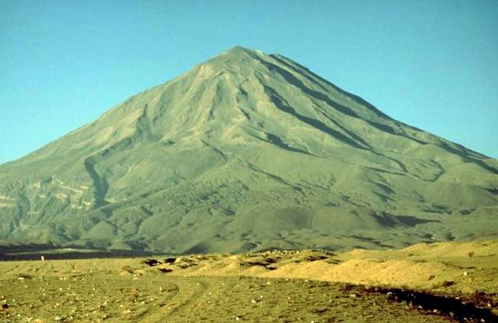
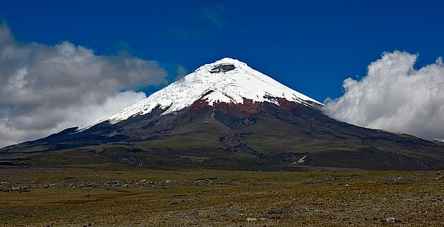
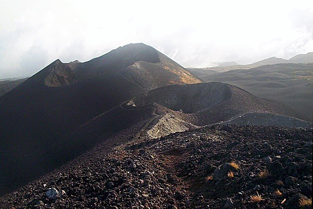
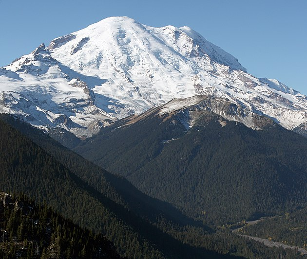

C'EST QUOI ?
Les volcans sont généralement une montagne ( dôme ou cône ) qui émet ou a émis des matières en fusion.
COMMENT CA MARCHE ?
Cette émission est possible en raison d'un orifice à la surface de la Terre, qui permet ou a permis un passage entre les régions internes du globe (magma) et sa surface.
PRÉCISÉMENT
Un volcan est composé de trois parties : le réservoir de magma qui se trouve en profondeur, une ou plusieurs cheminées qui permettent au magma de s'échapper du réservoir, et en surface, l'appareil volcanique dont la composition varie selon le type de volcan.

SOURCES : https://fr.vikidia.org/wiki/Volcan
TOP 10 PLUS GRANDS VOLCANS
1. L'Aconcagua en Argentine (6958 mètres)
2. Le Cotopaxi en Equateur (5896 mètres)
3. Le Misti au Pérou (5842 mètres)
4. Le Mem en Tanzanie (4565 mètres)
5. Le Mont Rainier aux Etats-Unis (4391 mètres)
6. Le Mauna Loa à Hawaii (4170 mètres)
7. Le Cameroun au Cameroun (4070 mètres)
8. L'Érébus en Antarctique (4020 mètres)
9. Le Kerinci en Indonésie (3800 mètres)
10. Le Fuji Yama au Japon (3776 mètres)
TOP 4 DES PLUS BEAUX VOLCANS



